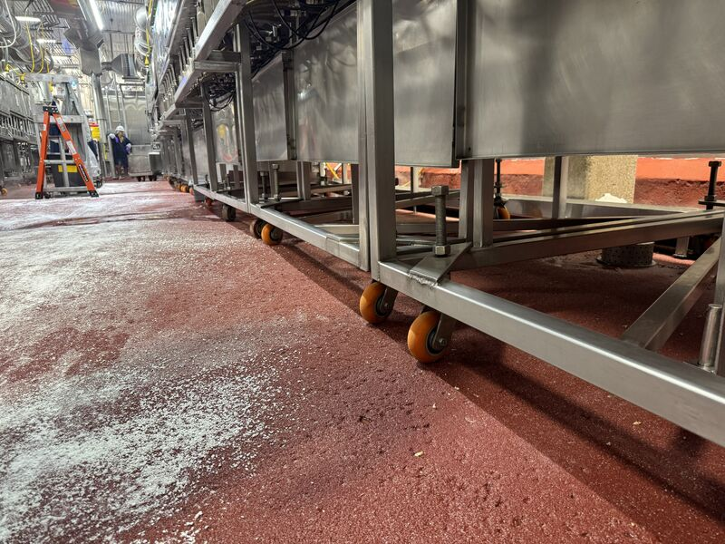
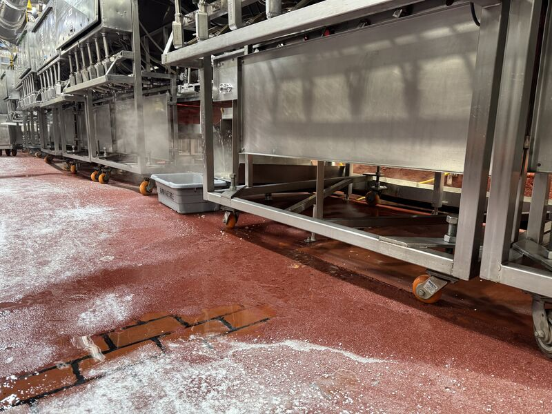
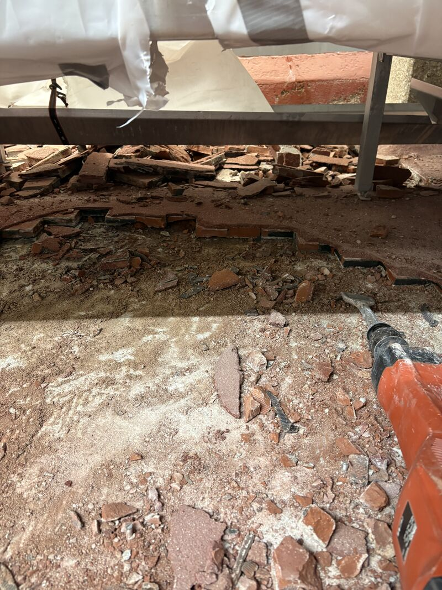
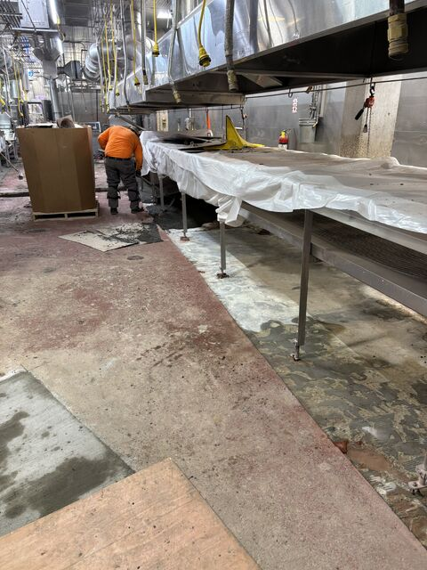
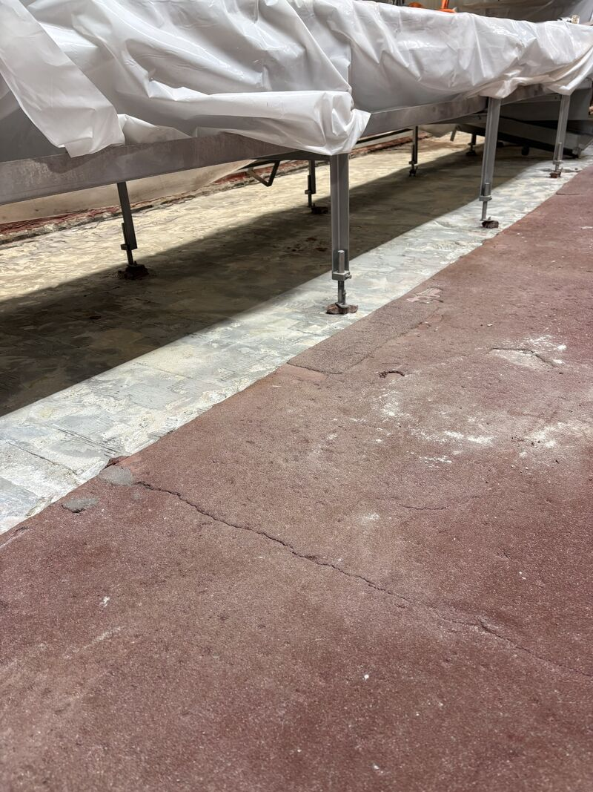
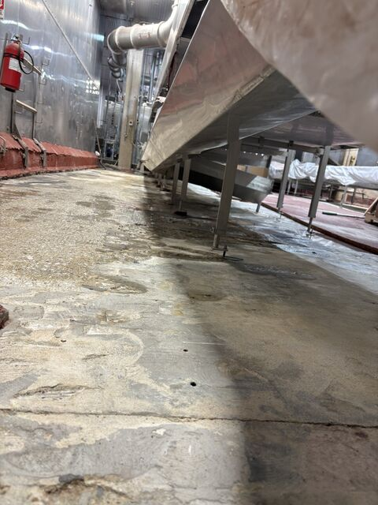
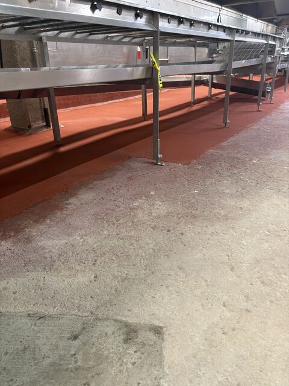
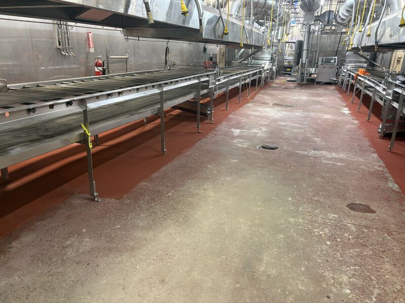

Failed brick. A resinous coating slapped right on top of it. Low clearance conveyors. One weekend shutdown to make it right before Monday production.
The previous repair tried to coat over dairy brick instead of dealing with the real problem. The brick was failing underneath, so the coating failed with it. That is not fixing the floor. That is buying time.


Getting to the Root of the Failure
One of our crews tore it out the right way. They jackhammered every piece of brick and old coating, prepped down to sound concrete, re-sloped and filled with SaniBulk polymer concrete, then capped the floor with SaniCrete STX 3/8" cementitious urethane.
That is the difference between covering a symptom and repairing the system. In a washdown facility, loose brick and failed coating layers become moisture traps. If they stay in place, the next coating inherits the same failure.
Weekend Work in Low Clearance
This was over 1,000 square feet of jackhammering under conveyors you could barely fit under. Back to back 18-hour days. The crew stayed on it because Monday production was the deadline.




Finished Before Production Restarted


Products Used
- SaniBulk polymer concrete for slope correction and substrate rebuilding
- SaniCrete STX 3/8" cementitious urethane for the finished food processing floor